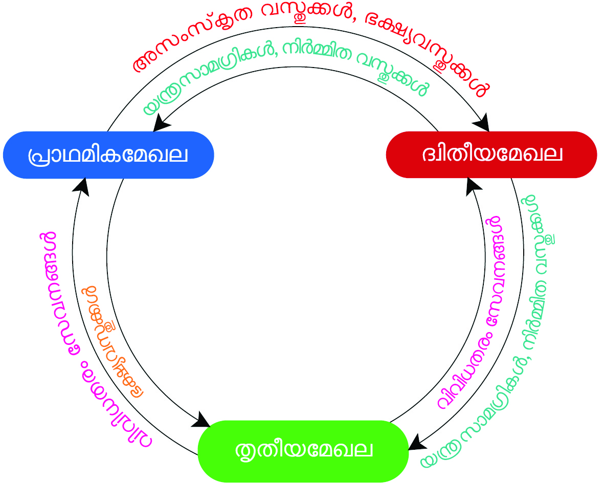

ചിത്രം 5.1 നിരീക്ിക്കൂ. വൈവിധ്്യമാർന്ന തൊൊഴിലുകളിൽ ഏർപ്പെട്ിരിക്ുന്നവരെ കാണാൻ
കഴിയുന്നില്ലേ? എന്ിനാണ് അവർ തൊൊഴിലുകളിൽ ഏർപ്പെടുന്നത്? ഇത്തരത്തിലുള്ള തൊൊഴി
ലുകളിലൂടെയാണ് അവർ പ്രധാനമായുംം വരുമാനംം കണ്ടെത്തുന്നത്. അതുകൊ�ൊണ്ടുതന്നെ
ഇത്തരംം തൊൊഴിലുകളെല്്ലാാംം സാമ്പത്തികപ്രവർത്തനങ്ങളുടെ ഭാഗവുമാണ്. ചിത്രത്തിത്തിൽ (5.1)
ചിത്രം 5.1
ഇന്തത്യൻ സമ്പദ്ഘടന വിവിധ
മേഖലകളിലൂടെ
5
ചിത്രം 5.1
Page 7
Page 8


104
ഭാഗം II
സാമൂഹ്്യശാസ്തം II
കാണുന്ന സാമ്പത്തികപ്രവർത്തനങ്ങൾ ഏതൊൊക്കെ മേഖലകളുമായിി
ബന്ധപ്പെട്ടിിരിക്കുന്നുന്നു എന്ന് കണ്ടെത്തി എഴുതിച്ചേർക്കുമല്ലലോ.
കൃഷിിയുമായിി ബന്ധപ്പെട്ടവ
വ്യവസായം, നിിർമ്ാണപ്രവർത്തനങ്ങൾ തുടങ്ങിിയവയുമായിി ബന്ധ
പ്പെട്ടവ
ഈ മൂന്ന് മേഖലകളിിലുമായിി നടക്കുന്ന സാമ്പത്തികപ്രവർത്തനങ്ങളെ
സമ്പദ്്ഘടനയിലെ പ്രാഥമിിക, ദ്വവിതീയ, തൃതീയ മേഖലകളിിലായാണ്്
ഉൾപ്പെടുത്തിയിിരിക്കുന്നത്്.
പ്രാഥമികമേഖല (Primary Sector)
പ്രകൃതിതിവിിഭവങ്ങളെ നേരിിട്ട്് ഉപയോ�ോഗപ്പെ
ടുത്തി നടത്ുന്ന പ്രവർത്തനങ്ങൾ പ്രാഥ
മിികമേഖലയുടെ
മുഖ്യ
സവിശേഷത
യാണ്്.
പ്രകൃതിതിവിിഭവങ്ങളെ
ആശ്രയിി
ച്ചുള്ള കൃഷിി, കന്നുകാലിിവളർത്തൽ, മത്സ്യ
ബന്ധനം തുടങ്ങിിയവയെല്്ലാാംാം പ്രാഥമിിക
മേഖലയിലെ പ്രവർത്തനങ്ങൾക്ക്് ചിില
ഉദാഹരണങ്ങളാണ്്. കൃഷിക്്കുുംും അനുബന്ധ
പ്രവർത്തനങ്ങൾക്്കുുംും കൂടുതൽ പ്രാധാന്യം
നൽകുന്നതിതിനാൽ പ്രാഥമിികമേഖല കാർ
ഷിികമേഖലയെന്്നുുംും (Agricultural Sector) അറിി
യപ്പെടുന്നു.
ഇന്ത്യയുടെ സാമ്പത്തിക സ്ഥിതിതിവിിവര
ക്കണക്കുകൾ തയ്ാറാക്കുന്ന നാഷണൽ
സ്റാറ്റിിസ്റ്റിക്കൽ ഓഫീസ്്
(NSO) സമ്പദ്്
ഘടനയിലെ ഓരോ�ോ മേഖലയിിലും ഉൾപ്പെടുന്ന സാമ്പത്തികപ്രവർത്തന
ങ്ങൾ ഏതൊൊക്കെയെന്ന് സൂചിപ്പിക്കുന്നുണ്ട്്. ചുവടെ നൽകിിയിിരിക്കുന്ന
വിിവിിധ സാമ്പത്തികപ്രവർത്തനങ്ങൾ ഉൾക്്കകൊള്ളുള്ളുന്ന ലിിസ്റ്റ്് പരിശോ�ോ
ധിച്ച്് ചിിത്ം (5.2, 5.3, 5.4) എന്നിിവ പൂർത്തിയാക്കുക.
ഹോ�ോട്ടലുകളും റസ്റ്റോറന്ുകളും
ബാങ്കിംം�ഗ്്്, ഇൻഷ്വവറൻസ്്്
കൃഷിിയും അനുബന്ധപ്രവർത്ത
നങ്ങളും
നിിർമ്ാണപ്രവർത്തനങ്ങൾ
വ്യവസായം
വിദ്്യയാഭ്യാസം
കന്നുകാലിിവളർത്തൽ
റിിയൽ എസ്റ്റേറ്റ്്
ആരോ�ോഗ്യം
ജലവിതരണം
വനം
വിവിധ സാാമ്പത്ികപ്രവർത്തനങ്ങൾ
നാാഷണൽ സ്റ്റാാറ്ിസ്റിക്കൽ ഓഫീസ് (NSO)
മുമ്പ്് നിിലനിന്നിിരുന്ന സെ
ൻട്രൽ സ്റാറ്റിിസ്റ്റിി
ക്കൽ ഓഫീസും (CSO) നാഷണൽ സാമ്പിിൾ
സർവെ ഓഫീസും (NSSO) ചേർന്ന് 2019-ൽ
രൂപീകൃതമായതാണ്് നാഷണൽ സ്റാറ്റിിസ്റ്റിക്കൽ
ഓഫീസ്് (NSO). ഇന്ത്യയിലെ ദേശീയവരു
മാനം ഉൾപ്പെടെയുള്ള സാമ്പത്തിക സ്ഥിതിതി
വിിവരക്കണക്കുകൾ ശേഖരിക്കുകയും വിശക
ലനം ചെയ്ുകയും പ്രസിിദ്ീകരിക്കുകയും
ചെയ്ുന്ന കേന്ദ്രഗവൺമെന്റ്് സ്ാപനമാണ്്
NSO. സാമ്പത്തികനയങ്ങൾ രൂപീകരിക്കുന്ന
തി
തിനും സർക്കാർപദ്ധതിതികൾ ആസൂത്രണം
ചെയ്ുന്നതിതിനും സാമ്പത്തികവളർച്ച നിിരീക്ഷിി
ക്കുന്നതിതിനും NSO നൽകുന്ന വിിവരങ്ങൾ അടിി
സ്ാനമാക്കുന്നുന്നു.
Page 9


105
ഇന്തത്യൻ സമ്പദ്ഘടന വിവിധ മേഖലകളിലൂടെ
സ്റ്റാൻഡേർഡ് IX
പ്രാഥമികമേഖലയുമാായി ബന്ധപ്പെട്ട ഡയഗ്രം പൂർത്ിയാാക്ൂ.
പാറപൊ�ൊട്ടിക്കൽ
മത്സസ്യബന്ധനം
...............................................
പ്ാഥമിികമേഖല
...............................................
...............................................
ഖനനം
ചിിത്ം 5.2
പ്രാഥമികമേഖലയിൽ നിന്്നുുംം ലഭ്്യമാാകുന്ന ഉല്പന്നങ്ങൾ എല്്ലാാംം നാംം
നേരിട്ട് ഉപയോ�ോഗിക്കുന്നവയാണോോ?
പ്രാഥമികമേഖലയിൽ നിന്്നുുംം ലഭിക്കുന്ന ഉല്പന്നങ്ങളെ ഉപയോ�ോഗ
പ്പെടുത്തിക്്കകൊണ്ട് നിർമ്ിക്കാാവുന്ന മറ്റ്് ഉല്പന്നങ്ങളുംം നാംം ഉപയോ�ോഗി
ക്കാാറില്ലേ?
നിങ്ങൾ പൂർത്ിയാാക്ിയ ഡയഗ്രം പരിശോോധിച്ചാാൽ പ്രാഥമികമേഖല
യിൽ നിന്്നുുംം നമുക്ക്് നേരിട്ട് ഉപയോ�ോഗിക്കാാവുന്ന ഉല്പന്നങ്ങളുംം മറ്റ്് ഉല്പന്ന
ങ്ങൾ നിർമ്ിക്കുന്നതിനാാവശ്യമാായ അസംംസ്കൃതവസ്തുക്കളുംം ലഭ്്യമാാകുന്ു
വെന്ന്് മനസ്ിലാാക്്കാാംം.
ദ്്വവിിതീയമേഖല (Secondary Sector)
വ്യവസാായംം, നിർമ്മാണംം എന്ിവയുമാായി ബന്ധപ്പെട്ട സാാമ്പത്ിക
പ്രവർത്തനങ്ങൾ ഈ മേഖലയിൽ ഉൾപ്പെടുന്ു. പ്രാഥമികമേഖലയിലെ
ഉല്പന്നങ്ങൾ അസംംസ്കൃതവസ്തുക്കളാായി ഉപയോ�ോഗിച്ചുകൊ�ൊണ്ട് പുതിയ
ഉല്പന്നങ്ങൾ നിർമ്ിക്കുന്ന പ്രവർത്തനങ്ങൾ നടക്കുന്നത്് ദ്്വിതീയമേഖല
യിലാണ്്
. വ്യവസാായങ്ങൾക്ക്് പ്രാധാന്്യയംം നൽകുന്നതിനാാൽ ദ്്വിതീയ
മേഖലയെ വ്യവസാായമേഖല (Industrial Sector) എന്്നുുംം വിളിക്ുന്ു.
ദ്്വിതീയമേഖലയിലെ സാാമ്പത്ികപ്രവർത്തനങ്ങളുമാായി ബന്ധപ്പെട്ട് ചുവടെ
നൽകിയിരിക്കുന്ന ഡയഗ്രം പൂർത്ിയാാക്ൂ.
......................................
വൈദ്്യ്യയുതിി, ഗ്്യയായാസ്
ദ്വിി�തീീയമേ�ഖല
......................................
......................................
ചിിത്ം 5.3
Page 10


106
ഭാഗം II
സാമൂഹ്്യശാസ്തം II
തൃതീയമേഖല (Tertiary Sector)
പ്രാഥമിക, ദ്വവിതീയ മേഖലകളിലെ ഉല്പന്നങ്ങൾ സംംഭരിക്ുക, വിപണനംം
ചെയ്ുക തുടങ്ങി എല്ലാ സാമ്പത്തികപ്രവർത്തനങ്ങളെയുംം കാര്യക്ഷമ
മാക്ുന്നത് തൃതീയമേഖലയിലെ വിവിധ പ്രവർത്തനങ്ങളിലൂടെയാണ്.
ആരോ�ോഗ്യയംം, വിദ്യയാഭ്യാസംം തുടങ്ങി വിവിധ സേവനപ്രവർത്തനങ്ങൾ ഉറപ്പു
വരുത്തുന്നത് തൃതീയമേഖലയാണ്. അതിനാൽ തൃതീയമേഖല സേവന
മേഖല (Service Sector) എന്്നുുംം അറിയപ്പെടുന്നു.
വിവിധ സാമ്പത്തികപ്രവർത്തനങ്ങൾ പ്രാഥമിക, ദ്വവിതീയ, തൃതീയ മേഖലക
ളിലായി ക്രമീകരിക്കപ്പെട്ിരിക്ുന്നത് നാംം കണ്ടെത്തിയല്്ലലോ. രാജ്യത്ത്
സാമ്പത്തികവളർച്ച ഉണ്ടാകുന്നത് ഈ മേഖലകൾ പരസ്പരംം ബന്ധപ്പെട്ു
പ്രവർത്തിക്കുമ്്പപോഴാണ്.
ഒരു ഉദാഹരണംം നോ�ോക്്കാാംം. കാർഷികമേഖലയിലെ കരിമ്പ് ഉൽപാദനംം
വർധിപ്പിക്ാൻ മറ്് രണ്ട് മേഖലകളുംം എങ്ങനെയെല്്ലാാംം സഹായകരമാ
കുന്നു?
തൃതീയമേഖലയുമായി ബന്ധപ്പെട്ട ഡയഗ്രം പൂൂർത്തിയാക്ുക.
ഗതാഗതംം
വാാർത്താാവിനിമയംം
വ്്യയാാപാാരവുംം
വാാണിജ്്യ്യവുംം
തൃതീയമേഖല
...........................................
...........................................
...........................................
...........................................
...........................................
ചിത്രം 5.4
കരിമ്പ് ഉൽപാാദനംം വർധിപ്പിക്കാാൻ
ദ്വിതീയമേഖലയിൽ നിന്്നുുംം
സ്വീകരിക്കാാവുന്നവ
തൃതീയമേഖലയിൽ നിന്്നുുംം
സ്വീകരിക്കാാവുന്നവ
യന്ത്രസാമഗ്ികൾ
വളങ്ങൾ
ഗതാഗതസൗകര്യയംം
സാമ്പത്തികസഹായംം
പട്ിക 5.1
Page 11



107
ഇന്തത്യൻ സമ്പദ്ഘടന വിവിധ മേഖലകളിലൂടെ
സ്റ്റാൻഡേർഡ് IX
ഇങ്ങനെ എല്ലാ മേഖലകളുടെയുംം പരസ്പരാശ്രയത്താലാണ് ഉൽപാദന
പ്രക്രിയ പൂൂർത്തിയാകുന്നത്.
വിവിധ മേഖലകളുടെ പരസ്പരാശ്രയത്വവംം ചുവടെ നൽകിയിരിക്ുന്ന ചിത്രം
വിശകലനംം ചെയ്് കണ്ടെത്തൂൂ.
ചിത്രം 5.5
ചിത്രം വിശകലനംം ചെയ്് ചുവടെ നൽകിയിരിക്ുന്ന ചോ�ോദ്യങ്ങൾക്് ഉത്തരംം
കണ്ടെത്തൂൂ.
പ്രാഥമികമേഖലയിൽ നിന്്നുുംം ഏതെല്്ലാാംം മേഖലകളിലേക്ാണ് സഹായംം
ലഭിക്ുന്നത്? എന്്തതൊക്കെയാണവ?
പ്രാഥമികമേഖലയ്ക്ക് മറ്് ഏതെല്്ലാാംം മേഖലകളിൽ നിന്്നുുംം എന്തെല്്ലാാംം
സഹായംം ലഭിക്ുന്നു?
പ്രാഥമിക, ദ്വവിതീയ, തൃതീയമേഖലകൾ എങ്ങനെയെല്്ലാാംം പരസ്പരംം ബന്ധ
പ്പെട്ിരിക്ുന്നു?
വിവിധ മേഖലകളുടെ പരസ്പരാശ്രയത്വവംം സാമ്പത്തികപുരോ�ോഗതിയ്ക്ക് അനിവാ
ര്യമാണ്. സമ്പദ്ഘടനയിലെ വിവിധ മേഖലകളിലായി നടക്ുന്ന ഉൽപാ
ദനംം, വിതരണംം, ഉപഭോ�ോഗംം തുടങ്ങിയവ ഒരു രാജ്യത്തിന്റെ
സാമ്പത്തിക
Page 12

108
ഭാഗം II
സാമൂഹ്്യശാസ്തം II
പ്രവർത്തനങ്ങളെന്ന്ന്ന് അറിയപ്പെടുന്നു. ഉൽപാദകഘടകങ്ങളെ (Factors
of Production) ഉപയോ�ോഗപ്പെടുത്തിക്്കകൊണ്ട്
് സാധനങ്ങളുംം സേവനങ്ങളുംം
ഉൽപാദിപ്പിക്ുന്ന പ്രക്രിയയാണ് ഉൽപാദനംം (Production). ഉൽപാദന
ത്തിലൂടെ ലഭിക്ുന്ന ഉല്പന്നമോ�ോ വരുമാനമോ�ോ വ്യക്ികൾക്ിടയിലോ�ോ
ഉൽപാദകഘടകങ്ങൾക്ിടയിലോ�ോ കൈമാറ്റംം ചെയ്യപ്പെടുന്ന പ്രക്രിയ
യാണ് വിതരണംം (Distribution) എന്നതുകൊ�ൊണ്ടുദ്്ദേശിക്ുന്നത്. ഇങ്ങനെ
വിതരണംം ചെയ്യപ്പെടുന്ന വരുമാനത്തിന്റെ
ഒരു വിഹിതംം ഉപഭോ�ോക്താവ്
സാധനങ്ങളുംം സേവനങ്ങളുംം വാങ്ങുന്നതിനായി വിനിയോ�ോഗിക്ുകയുംം
മിച്ചംം വരുന്നത് കരുതൽധനമായി (സമ്പാദ്യയംം) മാറ്റിവെയ്കുകയുംം ചെയ്ുന്നു.
ആവശ്യങ്ങളുംം ആഗ്രഹങ്ങളുംം തൃപ്തിപ്പെടുത്താൻ വിഭവങ്ങൾ ഉപയോ�ോഗി
ക്ുന്ന പ്രവർത്തനംം ഉപഭോ�ോഗംം (Consumption) എന്നറിയപ്പെടുന്നു. ഇത്തര
ത്തിൽ സാമ്പത്തികപ്രവർത്തനങ്ങളായ ഉൽപാദനംം, വിതരണംം, ഉപഭോ�ോഗംം
എന്നിവ ത്വരിതപ്പെടുത്തുമ്്പപോ
ഴാണ് സമ്പദ്വ്യവസ്ഥ പുരോ�ോഗതി കൈവരി
ക്ുന്നത്.
ദേശീയവരുമാാ
നംം (National Income)
സാമൂൂഹിക-സാമ്പത്തിക സർവെയുടെ ഭാഗമായി നാംം പലപ്്പപോഴുംം നമ്മുടെ
കുടുംംബത്തിന്റെ
വാർഷികവരുമാനക്കണക്ുകൾ ബന്ധപ്പെട്ട ഉദ്യോഗ
സ്ഥർക്് സമർപ്പിക്ാറുണ്ടല്്ലലോ. കുടുംംബത്തിന്റെ
വാർഷികവരുമാനംം
എങ്ങനെയാണ് കണ്ടെത്തുന്നത്? ഒരു വർഷംം കുടുംംബത്തിലെ
അംംഗ
ങ്ങൾക്് വിവിധ മാർഗങ്ങളിലൂടെ (ശമ്പളംം, മറ്് തൊൊഴിലുകൾ, ആസ്ി,
ബാങ്് നിക്ഷേപങ്ങൾ.... തുടങ്ങിയവ) ലഭിക്ുന്ന മൊ�ൊത്തംം വരുമാനമാണ്
ആ കുടുംംബത്തിന്റെ
വാർഷികവരുമാനംം. അതുപോ�ോലെ ഒരു രാജ്യത്തിന്
വിവിധ സാമ്പത്തികപ്രവർത്തനങ്ങളിൽ നിന്്നുുംം ലഭിക്ുന്ന ഒരു വർഷത്തെ
ആകെ വരുമാനത്തെ ആ രാജ്യത്തിന്റെ
വാർഷികവരുമാനംം എന്നുപറ
യുന്നു.
രാജ്യത്ത് ഉൽപാദിപ്പിക്ുന്ന ഉല്പന്നങ്ങളിൽ നേരിട്് ഉപഭോ�ോഗവസ്തുവായി
ഉപയോ�ോഗിക്ുന്ന
സാധനങ്ങളെ
അന്ിമസാധനങ്ങളെന്്നുുംം
(Final
Goods) അസംംസ്കൃതവസ്തുവായി (മറ്്ററൊരു ഉല്പന്നംം നിർമ്ിക്ുന്നതിനായി
ഉപയോ�ോഗിക്ുന്ന ഉല്പന്നംം) ഉപയോ�ോഗിക്ുന്ന സാധനങ്ങളെ ഇടനില
വസ്തുക്കൾ/ഇടനിലസാധനങ്ങളെന്്നുുംം (Intermediate Goods) അറിയപ്പെടുന്നു.
രാാജ്്യ്യത്് ഒരുു സാാമ്പത്ികവർഷംം ഉൽപാാദിപ്പിക്കുന്ന എല്ലാാ അന്തിമ സാാധന
ങ്ങളുുടെയുംം സേവനങ്ങളുുടെയുംം പണമൂല്്യമാാ
ണ് ആ രാാജ്്യ്യത്തിന്റെ ദേശീയ
വരുമാാ
നംം. ഇന്തത്യയിൽ ഏപ്ിൽ 1 മുുതൽ മാാർച്് 31 വരെയാാണ് ഒരുു സാാമ്പത്ിക
വർഷമാായി (Financial Year) കണക്കാാക്കപ്പെടുന്നത്.
Page 13

109
ഇന്തത്യൻ സമ്പദ്ഘടന വിവിധ മേഖലകളിലൂടെ
സ്റ്റാൻഡേർഡ് IX
ദേശീയവരുമാാ
നംം കണക്കാക്കുന്ന
തിന്റെ പ്രധാന്്യയംം
(Importance of measuring National Income)
പ്രാഥമിക, ദ്വവിതീയ, തൃതീയ മേഖലകളിലൂടെ ഒരു രാജ്യത്തിന് ലഭിക്ുന്ന
ആകെ വരുമാനംം അഥവാ ദേശീയവരുമാനംം ആ രാജ്യത്തിന്റെ
സാമ്പ
ത്തികസ്ഥിതി വിശദമാക്ുന്ന പ്രധാന സൂൂചകമാണ്. ദേശീയവരുമാനംം
കണക്ാക്ുന്നതിന്റെ പ്രാധാന്യയംം നമുക്് പരിശോ�ോധിക്്കാാംം.
രാജ്യത്തിന്റെ
സാമ്പത്തികവളർച്ച മനസ്ിലാക്ുന്നതിന്
വിവിധ മേഖലകളുടെ സംംഭാവന വിലയിരുത്തുന്നതിന്
പദ്ധതികൾ ആസൂത്രണംം ചെയ്ുന്നതിനുംം നടപ്പിലാക്ുന്നതിനുംം
സർക്ാരിനെ സഹായിക്ുന്നതിന്
രാജ്യങ്ങളുടെ സാമ്പത്തികസ്ഥിതി താരതമ്യയംം ചെയ്ുന്നതിന്
രാജ്യത്തെ ജനങ്ങളുടെ വിവിധ തരത്തിലുള്ള നിക്ഷേപങ്ങളുംം ചെല
വുകളുംം മനസ്ിലാക്ുന്നതിന്
സമ്പദ്വ്യവസ്ഥയുടെ ശക്ിയുംം ബലഹീനതയുംം (strength and weakness)
മനസ്ിലാക്ുന്നതിന്
ദേശീയവരുമാാ
നംം കണക്കാക്കുന്ന
രീതികൾ
(Methods of measuring National Income)
ദേശീയവരുമാനംം കണക്ാക്ുന്നതിന് ഉൽപാദനംം, വരുമാനംം, ചെലവാ
ക്കൽ എന്നിവയെ
അടിസ്ാനമാക്ി ചുവടെ നൽകിയിട്ുള്ള മൂന്ന്ൂന്ന്
രീതികൾ അവലംംബിക്ാറുണ്ട്.
ഉല്പന്നരീതി (Product Method)
വരുമാനരീതി (Income Method)
ചെലവുരീതി (Expenditure Method)
ഉല്പന്നരീതി (Product Method)
ഒരു സാമ്പത്തികവർഷത്തിൽ പ്രാഥമിക, ദ്വവിതീയ, തൃതീയ മേഖലകളിൽ
ഉൽപാദിപ്പിക്കപ്പെടുന്ന സാധനങ്ങളുടെയുംം സേവനങ്ങളുടെയുംം മൊ�ൊത്തംം
പണമൂല്്യത്തെ അടിസ്ാനമാക്ി വരുമാനംം കണക്ാക്ുന്ന രീതിയാണ്
ഉല്പന്നരീതി. വിവിധ മേഖലകളിൽ നിന്്നുുംം ദേശീയവരുമാനത്തിലേക്ുള്ള
സംംഭാവന എത്രത്്തതോളമാണെന്ന്
ന്ന് തിരിച്ചറിയുന്നതിനുംം അതത് മേഖല
കൾക്് അർഹമായ പ്രാധാന്യയംം ഉറപ്പുവരുത്തുന്നതിനുംം ഇത് സഹായി
ക്ുന്നു.
Page 14

110
ഭാഗം II
സാമൂഹ്്യശാസ്തം II
ദേശീയ വരുമാനം (NI) = x1 + x2 + x 3+ x4.......... + xn
x1 + x2 + x3+ x4.......... + xn എന്നത്് രാാജ്യയത്തെĹ പ്രാാഥമിിക, ദ്വിി�തീീയ, തൃതീയ
മേ�ഖലകളിിലായി ഉൽപാാദിിപ്പിിക്കപ്പെ�ടുുന്ന വിിവിിധ സാാധനങ്ങളുടെെയുംംc
സേ�വനങ്ങളുടെെയുംംc ആകെ� പണമൂല്യമാണ്.
വരുമാനരീതി (Income Method)
ഒരു സാമ്പത്തികവർഷത്തിൽ ഉൽപാദകഘടകങ്ങളായ ഭൂമി, തൊ�ൊ
ഴിൽ
(അധ്്വവാനം), മൂലധനം, സംഘാടനം എന്നിവയ്ക്ക് ലഭിക്കുന്ന പ്രതിഫല
ങ്ങളായ പാട്ടം, വേതനം, പലിശ, ലാഭം തുടങ്ങിങ്ങിയവയുടെ പണമൂല്്യ
ത്തിന്റെ അടിസ്ാനത്തിൽ ദേശീയവരുമാനം കണക്കാക്കുന്ന രീതിയാണ്
വരുമാനരീതി.
അതായത്, ദേശീയവരുമാനം (NI) = r + w + i + p
r = പാട്ടം (rent), w = വേതനം (wage), i = പലിശ (interest), p = ലാഭം (profit)
രാജ്്യത്തിന്റെ ദേശീയവരുമാനത്തിൽ ഓരോ�ോ ഉൽപാദകഘടകങ്ങൾക്്കുും
ലഭിക്കുന്ന വരുമാനം എത്രത്്തതോളമാണെന്ന്
ന്ന് മനസ്ിലാക്കാൻ ഈ രീതി
നമ്മെ സഹായിക്കുന്നു. വരുമാനരീതിയിലൂടെ കണക്കാക്കാൻ കഴിയുന്നത്
മൊ�ൊത്തദേശീയ വരുമാനമാണ് (Gross National Income - GNI).
ചെലവുരീതി (Expenditure Method)
ഒരു സാമ്പത്തികവർഷത്തിൽ രാജ്്യത്തെ
വിവിധ സാമ്പത്തികപ്രവർത്ത
നങ്ങൾക്കായി വിനിയോ�ോഗിക്കുന്ന സാധനങ്ങളുടെയും സേവനങ്ങളുടെയും
ആകെ ചെലവിന്റെ അടിസ്ാനത്തിൽ ദേശീയവരുമാനം കണക്കാക്കുന്ന
രീതിയാണിത്.
സാമ്പത്തികശാസ്ത്രത്തിൽ സാധനങ്ങളും സേവനങ്ങളും വാങ്ങുന്നതിനു
വേണ്ിയുള്ള ചെലവിനൊ�ൊപ്പം (Consumption Expenditure) നിക്ഷേപവും
ചെലവായാണ് (Investment Expenditure) പരിഗണിക്കപ്പെടുന്നത്. ഉപഭോ�ോ
ഗ
ചെലവ്,
നിക്ഷേപചെലവ്
എന്നിവയോ�ോടൊ�ൊപ്പം
സർക്കാർചെലവും
(Government Expenditure), അറ്റകയറ്റുമതി മൂല്്യവും (Net export value) കൂടി
ചേർന്നതാണ് രാജ്്യത്തിന്റെ ആകെ ചെലവ്.
അതായത്, ദേശീയ വരുമാനം (NI) = C + I + G + (X-M)
C = ഉപഭോ�ോ
ഗചെലവ് (Consumption expenditure), I = നിക്ഷേപചെലവ്
(Investment expenditure), G = സർക്കാർചെലവ് (Government expenditure),
X-M = രാാജ്യയത്തിന്റെ� കയറ്റുമതിി (X) ഇറക്കുമതിി (M) വ്യത്യാാ�സംം അഥവാ
അറ്റകയറ്റുമതിി (Net export).
ഇത്തരത്തിൽ ചെ�ലവുരീതിയിലൂടെെ കണക്കാക്കാൻ കഴിയുന്നത്് രാാജ്യയ
ത്തിന്റെ� മൊ�ൊത്ത
ദേ�ശീീയ ചെ�ലവാണ് (Gross National Expenditure - GNE).
Page 15

111
ഇന്തത്യൻ സമ്പദ്ഘടന വിവിധ മേഖലകളിലൂടെ
സ്റ്റാൻഡേർഡ് IX
ദേ�ശീീയവരുുമാനംം
കണക്കാക്കുന്ന
തിനുള്ള മൂന്ന് രീതികൾ നാം പരിി
ചയപ്പെ�ട്ടുു കഴിഞ്ഞുു. ഉല്പന്നരീതിയി
ലൂടെെ രാാജ്യയത്തെĹ പ്രാാഥമിിക, ദ്വിി�തീീയ,
തൃതീയ മേ�ഖലകളിിൽ ഉൽപാാദിിപ്പിിക്ക
പ്പെ�ടുുന്ന വിിവിിധ സാാധനങ്ങളുടെെയുംംc
സേ�വനങ്ങളുടെെയുംംc
ആകെ�
പണ
മൂല്യയവുംംc,
വരുുമാാനരീീതിിയിിലൂടെെ
മൊ�ൊത്ത
ദേ�ശീീയവരുുമാനവുംംc
(GNI)
ചെ�ലവുരീതി
പ്രകാാരംം
മൊ�ൊത്ത
ദേ�ശീീയ ചെ�ലവുംംc (GNE) ലഭിക്കുന്നു.
ഈ
മൂന്ന്
രീീതിികളിിലൂടെെയുംംc
ദേ�ശീീയ വരുുമാനംം കണക്കാക്കിയാൽ
ഒരേ�
ഫലമാാണ്
ലഭ്യയമാാവുക.
അതായത്്, ദേ�ശീ
ീയവരു
ുമാനംം
മൊ�ൊത്ത
ഉല്പന്നത്തിന്റെ�യുംംc മൊ�ൊത്ത
വരുുമാനത്തിന്റെ�യുംംc മൊ�ൊത്ത
ചെ�ല
വിിന്റെ�യുംംc അടിസ്ഥാനത്തിൽ കണ
ക്കാക്കിയാൽ
ഫലംം
ഒന്നുതന്നെ�
യായിരിക്കുംംc.
മൊ�ൊത്തആഭ്യയന്തരഉല്പന്നവുംം�
മൊ�ൊത്തദേ�ശീയഉല്പന്നവുംം�
Gross Domestic Product (GDP) and
Gross National Product (GNP)
ഒരു രാജ്്യത്തിന്റെ സാമ്പത്തികസ്ഥിതി കണക്കാക്കുന്നതെങ്ങനെയെന്്നുും
അതിന്റെ പ്രാധാന്്യയം എന്താണെന്്നുും വ്്യക്തമായല്്ലലോ. ദേശീയവരുമാനം കണ
ക്കാക്കുന്നതുമായി ബന്ധപ്പെട്ട ചില പ്രധാന ആശയങ്ങൾ പരിചയപ്പെടാം.
ഒരു സാമ്പത്തികവർഷത്തിൽ രാജ്്യത്തിന്റെ ആഭ്്യന്തരഅതിർത്തിക്കു
ള്ളിൽ ഉൽപാാദിിപ്പിിക്കപ്പെ�ടുുന്ന അന്തിമ സാാധനങ്ങളുടെെയുംംc സേ�വനങ്ങളു
ടെെയുംംc ആകെ� പണമൂല്യമാണ് മൊ�ൊത്ത
ആഭ്യന്തരഉല്പന്നംം (GDP). ഒരു
രാജ്്യത്തെ
ഗവൺമെന്റിന്റെ അധീനതയിലുള്ളതും സാമ്പത്തികപ്രവർത്തന
ങ്ങൾക്ക് പൂർണ്ണ സ്വാാ�തന്ത്ര്യയമുള്ളതുമായ ഭൂപ്രദേ�
ശത്തെĹയാണ് ആഭ്യ
ന്തര അതിർത്തി എന്നതുകൊ�ൊണ്ട്് അർഥമാക്കുന്നത്്. മൊ�ൊത്ത
ആഭ്യന്തര
ഉല്പന്നം കണക്കാക്കുമ്്പപോ
ൾ വിദേശത്ത് ജോ�ോലി ചെയ്ുന്ന വ്്യക്തിയക്തികളുടെ
വരുുമാനംം, വിിദേ�ശരാാജ്യയങ്ങളിിൽ പ്രവർത്തിക്കുന്ന സ്ഥാപനങ്ങളുടെെയുംംc സംംരംം
ഭങ്ങളുടെെയുംംc ലാഭംം തുടങ്ങിയവ ഇതിൽ ഉൾപ്പെ�ടുുന്നി്ല. ഉദാഹരണത്തിന്,
വിിദേ�ശരാാജ്യയത്ത് പ്രവർത്തിക്കുന്ന ഒരു ഇന്ത്യൻ കമ്പനിയുടെെ സാാമ്പ
ത്തികനേ�ട്ടങ്ങൾ ഇന്ത്യയുടെെ മൊ�ൊത്ത
ആഭ്യന്തരഉല്പന്നത്തിൽ (GDP)
ഉൾപ്പെ�ടുുന്നി്ല. മൊ�ൊത്ത
ആഭ്യന്തര ഉല്പന്നംം ഒരു സമ്പദ്�വ്യയവസ്ഥയുടെെ
സർക്ാർചെലവ് (Government Expenditure)
ജനക്ഷേമം ലക്ഷഷ്യമാക്കി സർക്കാർ നടത്തുന്ന എ്ലാ
പ്രവർത്തനങ്ങൾക്്കുും ആവശ്്യമായി വരുന്ന ചെലവാണ്
സർക്കാർ ചെലവ് അഥവാ പൊ�ൊത
ുചെലവ്. സർക്കാർ
ചെലവുകളെ വികസന ചെലവുകൾ (Developmental
Expenditure),
വികസനേതര
ചെലവുകൾ
(Non-
developmental Expenditure) എന്നിങ്ങനെ തരംത
ിരിക്്കാാം.
ഉപഭോ�ോഗചെലവ് (Consumption Expenditure)
ഉപഭോ�ോക്താ
ക്താക്കൾ ഉപഭോ�ോ
ഗത്തിനായി സാധനങ്ങളും
സേവനങ്ങളും വാങ്ങുന്നതിനുവേണ്ി ചെലവാക്കുന്ന
മൊ�ൊത്തം തുകയാണ് ഉപഭോ�ോ
ഗചെലവ്.
നിക്ഷേപചെലവ് (Investment Expenditure)
മൂലധന ഉല്പന്നങ്ങളുടെമേ
ൽ വ്്യവസ
ായ യൂണിറ്റുകളോ�ോ
വ്്യക്തിയക്തികളോ�ോ സ്ഥാപനങ്ങളോ�ോ ചെലവാക്കുന്ന മൊ�ൊത്തം
ചെലവാണ് നിക്ഷേപചെലവ്. ഭൂമിക്ക് (Land) വേണ്ി
യുള്ള ചെലവ്, യന്ത്രങ്ങൾക്ക് വേണ്ിയുള്ള ചെലവ്
തുടങ്ങിങ്ങിയവയൊ�ൊക്കെ
നിക്ഷേപചെലവിന് ചില ഉദാ
ഹരണങ്ങളാണ്.
അറ്റകയറ്റുമതികൾ (Net Exports)
രാജ്്യത്തിന്റ കയറ്റുമതി മൂല്്യവും ഇറക്കുമതി മൂല്്യവും
തമ്മിലുള്ള വ്്യത്്യയാസമാണ് അറ്റകയറ്റുമതി എന്നറിയ
പ്പെടുന്നത്.
Page 16


112
ഭാഗം II
സാമൂഹ്്യശാസ്തം II
മൊ�ൊത്തദേ�ശീീയഉല്പന്നവുംംc
(GNP) മൊ�ൊത്ത
ആഭ്യന്തരഉല്പന്നവുംംc
(GDP) തമ്മിൽ
എങ്ങനെ�യെ�ല്ലാം� വ്യത്യാാ�സപ്പെ�ട്ടിിരിക്കുന്നു?
അറ്റദേ�ശീീയഉല്പന്നംം (NNP) കണക്കാക്കുന്നത്് എന്തിനുവേ�ണ്ടിയാണ്?
അറ്റദേ�ശീയഉല്പന്നം (Net National Product - NNP)
ഒരു വാഹനമോ�ോ യന്ത്രമോ�ോ
വാങ്ങി ഉപയോ�ോ
ഗിക്കുമ്്പപോ
ൾ വർഷം കഴിയു
ന്്തതോറും അതിന്റെ പ്രവർത്തനക്ഷമത കുറഞ്ഞുവര
ുന്നു. അതായത്
ഏതൊ�ൊര
ു വസ്തുവും ഉപയോ�ോ
ഗിക്കുന്്തതോ
റും ആ വസ്തുവിന് പഴക്കവും
തേ�യ്്മാനവുംംc സംംഭവിിക്കുന്നു. ഇത്തരംം തേ�യ്്മാനംം പരിിഹരിക്കാൻ ആവശ്യ
മായ ചെ�ലവിിനെ� തേ�യ്്മാനച്ചെെăലവ് (Depreciation cost) എന്ന് പറയുന്നു.
ദേ�ശീീയവരുുമാനംം കണക്കാക്കുമ്പോ�ോൾ തേ�യ്്മാനച്ചെെăലവുകൾ പരിിഗണിക്ക
പ്പെ�ടാാറുണ്ട്. മൊ�ൊത്തദേ�ശീീയ ഉല്പന്നത്തിൽ നിന്ന് തേ�യ്്മാനച്ചെെăലവ് കുറ
യ്ക്കുമ്പോ�ോൾ ലഭ്യമാകുന്നതാണ് അറ്റദേ�ശീീയഉല്പന്നംം (NNP).
അറ്റദേ�ശീയഉല്പന്നം = മൊ�ൊത്തദേ�ശീയഉല്പന്നം - തേ�യ്മാനച്ചെăലവ്
(NNP = GNP - Depreciation Cost)
ഒരു രാജ്്യത്തിന്റെ സാമ്പത്തിക അതിർത്തി
(Economic Territory of a Country )
രാജ്്യത്തിന്റെ സാമ്പത്തിക അതിർത്തിയിൽ ഉൾപ്പെടു
ന്നവ.
വ്യോമാതിർത്തി, ജലാതിർത്തി
മറ്്ററൊര
ു രാജ്്യത്ത് സ്ഥിതിചെയ്ുന്ന രാജ്്യത്തിന്റെ
എംബസികൾ, ഹൈകമ്മിഷനുകൾ
രാജ്്യത്തിന്റെ പ്രത്്യയേ
ക അവകാശങ്ങളുള്ള മേഖല
കൾ, മത്സയബന്ധനം നടത്തുന്നതിനോ�ോ കടലിന്
അടിത്തട്ിലുള്ള ഇന്ധനം, ധാതുക്കൾ ഇവ ശേഖരി
ക്കു
ക്കുന്നതിനോ�ോ അവകാശമുള്ള സമുദ്രഭാഗം.
കസ്റ്റംസ് നിയന്ത്രണത്തിന് കീഴിലുള്ള ഓഫ്�്ഷഷോോർ
സംരംഭങ്ങൾ നടത്തുന്ന ഫ്ീ സോ�ോണുകൾ.
എന്നാൽ ഇന്തത്യക്കകത്തുള്ള മറ്റ്റ്റ് രാജ്്യത്തിന്റെ എംബസി
കൾ, ഹൈകമ്മിഷനുകൾ എന്നിവ നമ്മുടെ സാമ്പ
ത്തിക അതിർത്തിയിൽ ഉൾപ്പെടുന്നില്ല്ല.
വിിവിിധ
മേ�ഖലകളിിൽ
നിന്നുള്ള
സംംഭാവന വിിശകലനംം ചെ�യ്യാാൻ
അനുയോ�ോജ്യയമായ ഒന്നാണ്.
ആഭ്യന്തര ഉല്പന്നത്തോĹോടൊ�ൊപ്പംം ഇന്ത്യ
ക്കാരും�ം ഇന്ത്യൻ സ്ഥാപനങ്ങളും�ം
വിിദേ�ശങ്ങളിിൽ
നിന്നുംംc
നേ�ടുുന്ന
വരുുമാനംം കൂട്ടുകയുംംc അതിൽ നിന്നുംംc
വിിദേ�ശിികളും�ം
വിിദേ�ശസ്ഥാപന
ങ്ങളും�ം ഇന്ത്യയിൽ നിന്നുംംc നേ�ടുുന്ന
വരുുമാനംം
കുറയ്ക്കുകയുംംc
ചെ�യ്യുു
മ്പോ�ോൾ
മൊ�ൊത്തദേ�ശീീയഉല്പന്നംം
(GNP) കിട്ടുന്നു. അതായത്്, ഒരു
സാാമ്പത്തികവർഷംം രാാജ്യയത്തെĹ നിവാ
സികൾ
സ്വവദേ�ശത്തുംംc
വിിദേ�ശ
ത്തുമായി ഉൽപാാദിിപ്പിിക്കുന്ന എല്ലാ
അന്തിമ സാാധനങ്ങളുടെെയുംംc സേ�വന
ങ്ങളുടെെയുംംc
ആകെ�
മൂല്യമാണ്
മൊ�ൊത്തദേ�ശീീയഉല്പന്നംം.
Page 17


113
ഇന്തത്യൻ സമ്പദ്ഘടന വിവിധ മേഖലകളിലൂടെ
സ്റ്റാൻഡേർഡ് IX
പ്രതിശീർഷവരുമാാ
നംം (Per Capita Income - PCI)
ഒരു സമ്പദ്വ്യവസ്ഥയുടെ സാമ്പത്തികസ്ഥിതി മനസ്ിലാക്ുന്നതിന് നാംം
ഉപയോ�ോഗിക്ുന്ന മറ്്ററൊരു അളവുകോ�ോലാണ് പ്രതിശീർഷവരുമാനംം.
ദേശീയവരുമാനത്തെ രാജ്യത്തിന്റെ
ആകെ ജനസംഖ്്യകൊ�ൊണ്ട് ഹരിക്ു
മ്്പപോൾ കിട്ുന്നതാണ് പ്രതിശീർഷവരുമാനംം.
പ്രതിശീർഷവരുമാാ
നംം (PCI) =
ദേശീയവരുമാാ
നംം (National Income)
ആകെ ജനസംഖ്്യ്യ (Total Population)
രാജ്യത്തെ ആകെ ജനസംഖ്്യ ദേശീയവരുമാനത്തെ അപേക്ഷിച്ച് വർധിക്ുകയാ
ണെ
ങ്ിൽ പ്രതിശീർഷവരുമാനത്തിൽ എന്് സംംഭവിക്്കുുംം?
ദേശീയവരുമാാ
നംം കണക്കാക്കുന്ന
തിലെ പരിമിതികൾ
(Limitations in measuring National Income)
ദേശീയവരുമാനംം കണക്ാക്ുന്നത് പ്രധാനമായുംം രാജ്യത്തെ സാമ്പ
ത്തികസ്ഥിതി മനസ്ിലാക്ാനാണെ
ങ്ിലുംം ഈ ശ്രമകരമായ പ്രവർത്തന
ത്തിന് ഒട്ടേറെ പ്രായോ�ോ
ഗിക പ്രയാസങ്ങളുംം പരിമിതികളുമുണ്ട്. അവ
എന്തെല്ലാമാണെന്ന്
ന്ന് നോ�ോക്്കാാംം.
കൃത്യമായ സ്ഥിതിവിവരക്കണക്ുകളുടെ അഭാവംം
സാധനസേവനങ്ങളുടെ പണമൂല്്യയംം ഒന്നിൽ കൂൂടുതൽ ഉൽപാദന
ഘട്ടങ്ങളിൽ രേഖപ്പെടുത്താനുള്ള സാധ്്യത (Double Counting)
ഉൽപാദിപ്പിക്ുന്ന ഉല്പന്നങ്ങളുംം സേവനങ്ങളുംം സ്വന്തംം ആവശ്യ
ങ്ങൾക്കുവേണ്ടി ഉപയോ�ോഗിക്ുന്നത് ഇതിൽ ഉൾപ്പെടുന്നില്ല.
വിപണിയിൽ വില നിശ്ചയിക്കപ്പെടാത്ത സാധനങ്ങളുംം സേവനങ്ങളുംം
സാധാരണയായി ദേശീയവരുമാനത്തിൽ ഉൾപ്പെടുന്നില്ല.
ഗാർഹികജോ�ോലി ദേശീയവരുമാനത്തിൽ കണക്കാക്കപ്പെടുന്നില്ല.
രാജ്യത്ത് കുറച്ച് ആളുകൾക്ിടയിൽ മാത്രം വരുമാനംം വർധിച്ചാൽ പ്രതി
ശീർഷവരുമാനത്തിലുണ്ടാകുന്ന മാറ്റംം എന്ായിരിക്്കുുംം? അതിന്റെ അന
ന്തരഫലംം ചർച്ച ചെയ്് കുറിപ്പ് തയ്ാറാക്കൂ.
നമ്മുടെ രാജ്യത്തിന്റെ
യുംം സംംസ്ാനത്തിന്റെ
യുംം പ്രതിശീർഷവരുമാനംം
എത്രയാണെന്ന്
ന്ന് കണ്ടെത്തൂൂ.
Page 18

114
ഭാഗം II
സാമൂഹ്്യശാസ്തം II
ഇത്തരം പരിമിതികളുണ്ടെങ്ിലും ഇവ പരമാവധി പരിഹരിച്ചുകൊ�ൊണ്ട്
ദേശീയവരുമാനം കൃത്യമായി കണക്ാക്ുവാൻ നാഷണൽ സ്റാറ്ിസ്റ്റിക്കൽ
ഓഫീസ്് ശ്രമിച്ു വരുന്ു.
ദേശീയവരുമാനം കണക്ാക്കുമ്പ
പോൾ സമ്പദ്്ഘടനയിലെ വിവിധ മേഖല
കളിലെ വരുമാനം രാജ്്യത്തിന്്റെ ആകെ വരുമാനത്തെ നിർണ്ണയിക്കുന്ന
തിനാൽ ഓരോ�ോ മേഖലകളെയും നാം ശക്തമാക്കേണ്ടതുണ്ട്. ദേശീയ
വരുമാനത്തിലേ
ക്ുള്ള പ്ാഥമിക, ദ്വിതീയ, തൃതീയ മേഖലകളുടെ സംഭാ
വന നാം മേ�ഖല തിരിച്ച്്് വിലയിരുത്തേ�ണ്ടതുണ്ട്്്. ഓരോ�ോ മേ�ഖലയുടെെയുംം�
ദേ�ശീയവരുമാനത്തിലേ�ക്കുള്ള സംഭാവന ആ മേ�ഖലയുടെെ പ്രവർത്തന
നിലവാരത്തെ�ക്കുറിിച്ചുമാത്രമല്ല
മറ്റ്്്
മേ�ഖലകളുമായുള്ള
പരസ്പരാ
ശ്രയത്തെ�ക്കുറിിച്ചുംം� സൂചന നൽകുന്നു.
ഇന്തത്യയുടെ ദേശീയവരുമാനത്തിൽ വിിവിിധ മേഖലകളുടെ സംഭാവന
(Sectoral Contribution to India's National Income)
2015 ജനുവരി മുതൽ നാഷണൽ സ്റാറ്ിസ്റ്റിക്കൽ ഓഫീസ്് ഇന്ത്യൻ
സമ്പദ്്്ഘടനയുടെെ വിവിധ മേ�ഖലകളുടെെ സംഭാവന കൃത്യയമാായി കണക്കാ
ക്കുന്നതിന്്് മൊ�ൊത്തവർധിതമൂല്യം�ം/മൊ�ൊത്തസംയോ�ോജിതമൂല്യം�ം (Gross Value
Added) ഉപയോ�ോഗിിച്ചു തുടങ്ങിി. അതിനുമുമ്പ്്് മൊ�ൊത്ത ആഭ്യയന്തര ഉല്പന്നത്തിൽ
(GDP) ആയിരുന്നു മേ�ഖലാതല സംഭാവനകൾ കണക്കാക്കിയിരുന്നത്്്.
മൊ�ൊത്തവർധിതമൂല്യം�ം (GVA) പ്രകാരം സമ്പദ്�ഘടനയിലെ� ഓരോ�ോ മേ�ഖല
യുടെയും സംഭാവന താരതമ്്യയേന വേഗത്തിത്തിലും കൃത്യമായും കണക്ാക്ാൻ
സാധിക്ുന്ു.
മൊ�ൊത്തവർധിിിതമൂല്യം�ം/മൊ�ൊത്തസംയോ�ോജിിിതമൂല്യം�ം
Gross Value Added (GVA)
മൊ�ൊത്തവർധിതമൂല്യം�ം (GVA) എന്നത്്് സമ്പദ്�വ്യയയവസ്ഥയിൽ ഉൽപാദിപ്പിി
ക്കുന്ന സാധനങ്ങളുടെയും സേവനങ്ങളുടെയും ആകെ മൂല്യമാണ്്. ദേശീയ
കണക്ിൽ മൊ�ൊത്ത ഉല്പന്നത്തിന്്റെ മൂല്യത്തിൽ (Gross Product Value) നിന്ന്്
ഇടനില ഉപഭോ�ോഗമൂല്യം�ം (value of intermediate consumption) കുറച്ചാണ്്്
മൊ�ൊത്തവർധിതമൂല്യം�ം കണക്കാക്കുന്നത്്്.
മൊ�ൊത്തവർധിിിതമൂല്യം�ം
= മൊ�ൊത്തഉല്പന്നമൂല്യം�ം - ഇടനിിില ഉപഭോ�ോഗമൂല്യം�ം
(Gross value added (GVA) = Gross product value - Value of intermediate consumption)
ഒരു സാധനമോ�ോ സേവനമോ�ോ ഉൽപാദിപ്പിക്ാൻ ഉപയോ�ോഗിച്ച അസംസ്കൃത
വസ്തുക്കളുടെ ഉപഭോ�ോഗമാണ്് ഇടനില ഉപഭോ�ോഗം (Intermediate consumption)
എന്നതുകൊ�ൊണ്ട് അർഥമാക്കുന്നത്്.
ജി.വി.എ കണക്ാക്കുമ്പ
പോൾ ഉല്പന്നമൂല്യം മാത്രമേ കണക്ാക്ുന്ുള്ളൂ.
ഉല്പന്നത്തിന്മേലുള്ള നികുതികളോ�ോ സബ്്സിഡികളോ�ോ പരിഗണിക്ുന്ില്ല.
Page 19


115
ഇന്തത്യൻ സമ്പദ്ഘടന വിവിധ മേഖലകളിലൂടെ
സ്റ്റാൻഡേർഡ് IX
നികുുതി (Tax), സബ്സിഡി (Subsidy)
ക്ഷേമപ്രവർത്തനങ്ങൾ, വികസനപ്രവർത്തനങ്ങൾ എന്നിങ്ങനെ
പൊ�ൊതുതാൽപര്യത്തിനുവേണ്ടിയുള്ള
ചെലവുകൾ
വഹിക്ാ
നായി ജനങ്ങൾ സർക്ാരിന് നിർബന്ധമായുംം നൽകേണ്ട
പണമാണ് നികുതി.
സാമൂൂഹിക-സാമ്പത്തിക
നയത്തിന്റെ
അടിസ്ാനത്തിൽ
വ്യക്ികൾക്്കകോ
സ്ാപനങ്ങൾക്്കകോ
സാധനങ്ങളുടെയോ�ോ
സേവനങ്ങളുടെയോ�ോേമൽ ഗവൺമെന്് നൽകുന്ന സാമ്പത്തിക
പിന്ുണയോ�ോ ആനുകൂല്്യമോ�ോ ആണ് സബ്സിഡി.
ചിത്രം 5.6
44%
38%
29%
21%
17%
23%
23%
25%
29%
28%
33%
38%
46%
50%
55%
0%
10%
20%
30%
40%
50%
60%
1982-83
1992-93
2002-03
2012-13
2022-23 (1st AE)
GVA വിഹിതം ശതമാനത്തിൽ
വർഷം
വിവിധ േമഖലകൾ തിരിച്ചƧളള് GVA വിഹിതം
- ജിവിഎ GVA േകാൺസ്റ്റന്റ്˘ ൈര്പസ്
കൃഷിയും അനുബന്ധേമഖലയും
േസവന േമഖല
വയ്വസായ േമഖല
source : Economic survey 2022-2023
വിവിധ മേഖലകൾ തിരിച്ചുുള്ള GVA വിഹിതംം - 1982-83 മുുതൽ 2022-23 വരെ
(സ്ിരവിലയിൽ)
വർഷംം
Source data from Economic survey 2022 - 2023
GVA വിഹിതംം ശതമാാനത്ിൽ
കാാർഷികമേഖല
വ്്യ്യവസാായമേഖല
സേവനമേഖല
എന്നാൽ ജി.ഡി.പി കണക്ാക്ു
മ്്പപോൾ ഉല്പന്ന നികുതിയുംം ഉല്പ
ന്നത്തിന്്മേലുള്ള
സബ്സിഡിയുംം
തമ്മിലുള്ള വ്യയത്യാാ�സംംം മൊ�ൊത്ത
വർധിതമൂൂല്യയത്തോ�ോടൊ�ൊപ്പംംം (GVA)
കൂൂട്ടിച്ചേ�ർക്കപ്പെ�ടുന്നു.
അതായത്,
മൊ�ൊത്തആഭ്യയയന്തരഉല്പന്നംംം = മൊ�ൊത്തവർധിതമൂല്യം�ംം + (ഉല്പന്നനികുുതി - ഉല്പന്നസബ്സിഡി)
GDP = GVA + (Product tax - Product subsidy)
ഇന്ത്യയയുടെെ ദേ�ശീയവരുമാനത്തിൽ വിവിധ കാലയളവിൽ പ്രാഥമിക, ദ്വിി�തീീയ, തൃതീയ
മേ�ഖലകളിൽ നിന്നുള്ള മൊ�ൊത്തവർധിതമൂല്യം�ംം (GVA) ചുവടെെ നൽകിയിരിക്കുന്ന ഗ്രാഫിൽ
നിന്നുംം� മനസ്സിലാക്കാംം.
ഗ്ാഫ് വിശലകനംം ചെയ്് ചുവടെ നൽകിയിട്ുള്ള ചോ�ോദ്യങ്ങൾക്് ഉത്തരംം
കണ്ടെത്തി രേഖപ്പെടുത്തൂൂ.
മുകളിൽ സൂൂചിപ്പിച്ചിട്ുള്ള വിവിധ കാലയളവിൽ (1982-83 മുതൽ 2022-23 വരെ)
ഏത് മേഖലയുടെ സംംഭാവനയാണ് ജി.വി.എയിൽ തുടർച്ചയായി കുറഞ്ഞുവരുന്ന
തായി കാണപ്പെടുന്നത്?
ജി.വി.എ യിലേക്ുള്ള വിഹിതത്തിത്തിൽ തുടർച്ചയായി വർധനവ് രേഖപ്പെടുത്തിയ
മേഖല ഏത്?
ഈ കാലയളവിൽ വിവിധ മേഖലകളിലെ ജി.വി.എ വിഹിതംം വിശകലനംം ചെയ്ത്
കുറിപ്പ് തയ്ാറാക്ുക.
39%
Page 20


116
ഭാഗം II
സാമൂഹ്്യശാസ്തം II
സംംസ്ഥാാനത്തിിന്റെź മൊൊത്തവർധിിതമൂല്യംDzം/മൊൊത്തസംംയോോജിിതമൂല്യംDzം
(Gross State Value Added - GSVA)
കേsരളത്തിിന്റെź
മൊൊത്തവർധിിതമൂല്യയത്തിിലുംc
(GSVA) അതിന്റെź
വിവിധ
മേേഖലകളി
ിലുുള്ള
സംംഭാാവനയിിലുംc
കാാലാാനുുസൃതമാായ
മാാറ്റങ്ങൾ
പ്രകട
മാകുന്നുണ്ട്.
ചുുവടെെ നൽകിയിിരിക്കുുന്ന ഗ്രാാഫ്്് നിരീക്ഷിിച്ച്്് സംംസ്ഥാാനത്തിിന്റെź മൊൊത്ത
വർധിിതമൂല്യയത്തിിൽ (GSVA) വിവിധ മേേഖലകളുുടെെ സംംഭാാവനകൾ വിശകലനംം
ചെ�യ്ത്്് പ്രവർത്തനംം
പൂൂർത്തിിയാാക്കുുക.
പ്രാാഥമികമേേഖലയുുടെെ
സംംഭാാവനയിിൽ 2019-20 കളിൽ നിന്നുംc 2022-23
കാാലഘട്ടമാായപ്പോƀോൾ സംംസ്ഥാാനത്തിിന്റെź മൊൊത്തവർധിിതമൂല്യയത്തിിൽ
എന്ത്്് മാാറ്റമാാണ്്് കാാണാാൻ സാാധിിക്കുുന്നത്്്?
2022-23
കാാലയളവിൽ
കേsരളത്തിിന്റെź
മൊൊത്തവർധിിതമൂല്യയത്തിിൽ
കൂടുുതൽ സംംഭാാവന നൽകിയ മേേഖലയേ�ത്്്
?
ഗ്രാഫ്്
വിശകലനം നടത്തിയപ്്പപോ
ൾ ദ്്വിതീയമേ
ഖലയുടെ
സംഭാ
വനയിൽ
ഏതുതരത്തിലു
ള്ള മാറ്റമാണ്് പ്രകടമായത്്?
കേsരളത്തിിന്റെź മൊൊത്തവർധിിതമൂല്യയത്തിിലേ�ക്ക്്് വിവിധ മേേഖലകളുുടെെ
സംംഭാാവനകളെ�ക്കുുറിിച്ച്്് വിശകലനക്കുുറിിപ്പ്്് തയ്യാാറാാക്കുുക.
ചിത്ം 5.7
വിവിധ മേഖലകൾ തിരിച്ചുള്ള GSVA വിഹിതം - 2019-20 മുുതൽ 2022-23 വരെ
(സ്ഥിരവിലയിൽ)
വർഷം
അവലംബം: സാമ്പത്തിക അവലോ�ോകനം 2023 കേരള സംസ്ാന ആസൂത്രണ ബോ�ോർഡ്, തിിരുവനന്തപുരം
ജനുവരിി 2024
GSVA വിഹിതം ശതമാനത്തിൽ
കാർഷികമേഖല
വ്്യവസായമേഖല
സേ
വനമേഖല
8.97
10.11
9.39
8.98
26.82
29.43
28
28.4
64.21
60.46
62.61
62.62
0
10
20
30
40
50
60
70
2019-20
2020-21
2021-22 (P)
2022-23 (Q)
* P - താൽക്ാലിികം, Q - ത്വരിിതം
Page 21


117
ഇന്തത്യൻ സമ്പദ്ഘടന വിവിധ മേഖലകളിലൂടെ
സ്റ്റാൻഡേർഡ് IX
ഇന്ത്യയയുടെെയുംം� കേ�രളത്തിന്റെ�യുംം� മൊ�ൊത്തവർധിതമൂൂല്യയത്തിൽ തൃതീയ
മേഖലയുടെ സംംഭാവന മറ്് മേഖലകളെ അപേക്ഷിച്ച് കൂൂടുതലാണെന്ന്
ന്ന്
നാംം മനസ്ിലാക്ിയല്്ലലോ. എന്്തതൊക്കെയാവാംം ഇതിനുള്ള കാരണങ്ങളെന്ന്ന്ന്
പരിശോ�ോധിക്്കാാംം.
ആരോ�ോഗ്യമേഖലയുടെയുംം വിദ്യയാഭ്യാസമേഖലയുടെയുംം പുരോ�ോഗതി
ഉറപ്പാക്കിക്്കകൊണ്ടുള്ള പ്രവർത്തനങ്ങൾ
രാജ്യത്തിന്റെ
വ്യാപാര, വാണിജ്യ മേഖലകളെ മുന്്നനോട്ുനയിക്ുന്ന
ബാങ്്കിിംംഗ്, ഇൻഷുറൻസ് സംവിധാനങ്ങളുടെ വളർച്ച
ഗതാഗത-വാർത്താവിനിമയ മേഖലകളുടെ വളർച്ച
വിനോ�ോദസഞ്ാര മേഖലയുടെ വളർച്ച
അറിവധിഷ്ഠിത വ്യവസായങ്ങളുടെ വളർച്ച
ഇവയെല്്ലാാംം ജി.വി.എ വിഹിതത്തിലേക്ുള്ള തൃതീയമേഖലയുടെ സംംഭാ
വന വർധിച്ചുവരുന്നതിന് കാരണമാകുന്നു.
അറിവധിഷ്ിതമേഖലയുുടെ വളർച്ച
(Growth of Knowledge Sector)
ഉൽപാദനപ്രക്രിയയിൽ ഉപയോ�ോഗപ്രദമാകുന്ന ചില വ്യക്ിഗത പ്രത്്യയേ
കതകളെയാണ് മനുഷ്യമൂൂലധനംം എന്നതുകൊ�ൊണ്ട് അർഥമാക്ുന്നത്.
ഇവയിൽ മനുഷ്യവിഭവത്തിന്റെ അറിവ്, കഴിവുകൾ, ആരോ�ോഗ്യയംം, വിദ്യാ
ഭ്യാസംം എന്നിവ ഉൾക്്കകൊള്ളുന്നുള്ളുന്നു. സാമ്പത്തികവളർച്ച കൈവരിക്ുന്ന
തിനായി അറിവുംം സാങ്കേതികവിദ്യയുംം ഫലപ്രദമായി പ്രയോ�ോഗിക്ുന്ന
മേഖലയാണ് അറിവധിഷ്ഠിതമേഖല. ആധുനിക സാങ്കേതികവിദ്യയുംം
വിവരവിനിമയ സാധ്്യതകളുംം ഇന്ന് അറിവ് സമ്പദ്ക്്ര്ര
മംം (Knowledge
Economy) എന്ന തലത്തിലേക്് വളർന്നു
വികസിച്ചിട്ടുണ്ട്. തൃതീയമേഖലയുടെ
ഭാഗമായി അറിവ് അടിസ്ാനമാക്ി
യുള്ള സേവനങ്ങളുടെ വളർച്ച ഇന്ന്
വലിയ തോോതിൽ നടക്കുന്നുണ്ട്. ആഗോ�ോള
തലത്തിൽ സോ�ോഫ്റ്റുവെയർ സേവനംം ലഭ്യ
മാക്ുന്ന തരത്തിൽ ഇന്തത്യ്യയുടെ വിവര
വിനിമയസാങ്കേതികവിദ്യ
വികാസംം
പ്രാപിച്ചിട്ടുണ്ട്. ഇന്തത്യ്യയുടെ ജനസംഖ്്യ
യുടെ അറുപത്തിയഞ്് ശതമാനത്്തതോ
ളമുള്ള 35 വയസിൽ താഴെ വരുന്ന ജന
സമൂൂഹത്തിന്റെ
മുന്നിൽ
ഇതൊൊരു
വലിയ അവസരവുംം സാധ്്യതയുമാണ്.
ചിത്രം 5.8
Page 22


118
ഭാഗം II
സാമൂഹ്്യശാസ്തം II
ഈ പശ്ചാത്തലത്തിൽ വിജ്ാനവിസ്്ഫ
ഫോടനത്തിന്റെ
ഫലമായി സാമ്പത്തികമായി
മുന്നേറാനുംം അതുവഴി ജനക്ഷേമംം വർധിപ്പിക്ാനുംം ഇന്തത്യ്യക്് കഴിയുംം. അറിവ
ധിഷ്ഠിതമേഖലകളുടെ വികസനത്തിന് സർക്ാർ മുൻഗണന നൽകുന്നുണ്ട്
്.
കേരളസർക്ാർ ആരംംഭിച്ച ടെക്�്നനോോപാർക്്, ഇൻഫോ�ോപാർക്് തുടങ്ങിയവ ഇതി
നുദാഹരണങ്ങളാണ്.
അറിവധിഷ്ഠിതമേഖലയെ പരിപോ�ോഷിപ്പിക്ുന്നതിന് അനുകൂൂലമായ സാഹചര്യ
ങ്ങൾ ഇന്ന് ഇന്തത്യ്യയിൽ നിലനിൽക്കുന്നുണ്ട്. വിവിധ വിദേശ ഭാഷകൾ അനായാസംം
കൈകാര്യയംം ചെയ്ുന്ന ജനസമൂൂഹംം, മെച്ചപ്പെട്ട ശാസ്ത്രസാങ്കേതിക വളർച്ച, വിപുല
മായ സർക്ാർ-സഹകരണ-സ്വകാര്യ മേഖലകൾ, അനുദിനംം വികസിച്ചുകൊ�ൊണ്ടി
രിക്ുന്ന വിപണികൾ തുടങ്ങിയവയെല്്ലാാംം തന്നെ അറിവധിഷ്ഠിതമേഖലയെ
വികസിപ്പിക്ുന്നതിനുംം അതുവഴി ദേശീയവരുമാനത്തിൽ തൃതീയമേഖലയുടെ
സംംഭാവന പരിപോ�ോഷിപ്പിക്കപ്പെടുന്നതിനുംം കാരണമാകുന്നുണ്ട്
്.
വിവിധ മേഖലകളിലെ തൊ�ൊഴിൽ ഘടന
2022-23 കാലയളവിൽ ഇന്തത്യ്യയുടെ ദേശീയവരുമാനത്തിലേക്് ഏറ്റവുംം കൂൂടുതൽ
സംംഭാവന ചെയ്തത് സേവനമേഖലയാണെന്ന്
ന്ന് ഗ്ാഫിൽ നിന്്നുുംം (ചിത്രം 5.6)
കണ്ടെത്തിയല്്ലലോ. ഇന്തത്യ്യയിലെ വിവിധ മേഖലകളിലെ തൊൊഴിൽ ഘടനയിലുംം
വ്യത്യാസമുണ്ട്. ചുവടെ നൽകിയിരിക്ുന്ന ഗ്ാഫ് (ചിത്രം 5.9) നിരീക്ിക്കൂ.
തൃതീയമേഖലയെ ശക്തിപ്പെടുത്തുന്നതിൽ അറിവധിഷ്ഠിതമേഖല പ്രധാന പങ്്
വഹിക്ുന്നു. പ്രസ്താവന വിലയിരുത്തുക.
0
10
20
30
40
50
60
70
80
1991
2001
2011
2019-20
66.8
12.7
20.5
56.7
18.2
25.1
48.9
24.4 26.7
43.5
24.19
32.36
പ്രാഥമികമേഖല
ദ്വവിതീയമേഖല
തൃതീയമേഖല
Source: Indian Economy 2ndEdition, Madhur. M. Mahajan
ചിത്രം 5.9
ഇന്തത്യയുുടെ തൊ�ൊഴിൽഘടന - 1991 മുുതൽ 2019-20 വരെ
(ശതമാാനത്ിൽ)
തൊ�ൊഴിൽഘടന ശതമാാനത്ിൽ
വർഷംം
Page 23


119
ഇന്തത്യൻ സമ്പദ്ഘടന വിവിധ മേഖലകളിലൂടെ
സ്റ്റാൻഡേർഡ് IX
സമ്പദ്ഘടനയിലെ വിവിധ മേഖലകളിലെ തൊൊഴിൽഘടന വിശദമാക്ുന്ന
ഗ്ാഫ് താഴെ നൽകിയിട്ുള്ള ചോ�ോദ്യങ്ങളുടെ അടിസ്ാനത്തിൽ പരിശോ�ോ
ധിക്കൂ. കൂൂടുതൽ കണ്ടെത്തലുകൾ എഴുതിച്്ചേർക്ുമല്്ലലോ.
1991 മുതൽ 2019-20 വരെയുള്ള കാലയളവിൽ ഏത് മേഖലയിലാണ്
ഏറ്റവുംം കൂൂടുതൽ തൊൊഴിലാളികൾ ഉൾപ്പെട്ിരിക്ുന്നത്?
ദ്വവിതീയ, തൃതീയ മേഖലകളിലെ തൊൊഴിൽഘടനയിൽ എന്് വ്യതിയാന
മാണ് ഈ കാലയളവിൽ കണ്ടെത്താനാവുന്നത്?
ഇന്തത്യ്യൻ സമ്പദ്ഘടനയിലെ വിവിധ മേഖലകളിലെ തൊൊഴിൽഘടനയെ
ക്ുറിച്ച് ഗ്ാഫ് (ചിത്രം 5.9) വിശകലനംം നടത്തി കുറിപ്പ് തയ്ാറാക്ുക.
രാജ്യത്തിന്റെ
സാമ്പത്തികവളർച്ചയുടെ വിവിധ ഘട്ടങ്ങളിൽ വിവിധ
മേഖലകൾക്ുള്ള ആപേക്ിക പ്രാധാന്യത്തിൽ മാറ്റംം വരുന്നതായി
നമുക്് കാണാൻ സാധിക്്കുുംം. ഇതാണ് ഘടനാപരമായ പരിവർത്തനംം
(Structural Transformation) എന്നതുകൊ�ൊണ്ടുദ്്ദേശിക്ുന്നത്. വിവിധ മേഖലകൾ
നൽകുന്ന സംംഭാവനയിലുംം അവ ലഭ്യമാക്ുന്ന തൊൊഴിലവസരങ്ങളിലുംം
ഉണ്ടാകുന്ന മാറ്റമാണ് ഇതുകൊ�ൊണ്ടർഥമാക്ുന്നത്.
സംംഘടിത, അസംംഘടിത മേഖല
(Organised and Unorganised Sector)
തൊൊഴിൽമേഖലയിൽ സംംഘടിതമേഖല, അസംംഘടിതമേഖല എന്നിങ്ങനെ
രണ്ട് വിഭാഗങ്ങൾ നിലനിൽക്കുന്നുണ്ട്. കൃത്യമായ നിയമവ്യവസ്ഥയ്ക്ക്
കീഴിൽ പ്രവർത്തിക്ുകയുംം തൊൊഴിലാളികൾക്് സുരക്ഷിതമായ തൊൊഴിൽ
സാഹചര്യയംം ഉറപ്പുനൽകുകയുംം അവരുടെ അവകാശങ്ങൾ സംംരക്ിക്ു
കയുംം ചെയ്ുന്ന സംംരംംഭങ്ങളുംം പ്രവർത്തനങ്ങളുംം ഉൾപ്പെടുന്ന മേഖല
യാണ് സംംഘടിതമേഖല (Organised Sector). കമ്പനി നിയമംം, ഫാക്ടറി നിയമംം,
സൊ�ൊസൈറ്ീസ് ആക്ട്, കോ�ോ-ഓപ്പറേറ്റീവ് ആക്ട് തുടങ്ങിയ ഏതെങ്ിലുംം
നിയമംം അനുസരിച്ച് രജിസ്റ്റർ ചെയ്് അവയുടെ നിയമങ്ങൾക്് വിധേയമായി
പ്രവർത്തിക്ുന്ന തൊൊഴിൽമേഖലയാണിത്. ഏത് നിയമപ്രകാരമാണോ�ോ
രജിസ്റ്റർ ചെയ്യപ്പെട്ടത് ആ നിയമത്തിൽ അനുശാസിക്ുന്ന വ്യവസ്ഥ
കളെല്്ലാാംം പാലിക്കുവാൻ സംംഘടിതമേഖലയിലെ തൊൊഴിൽ യൂൂണിറ്ുകൾ
ബാധ്്യസ്ഥരാണ്.
അസംംഘടിതമേഖല (Unorganised Sector) എന്നത് ഏതെങ്ിലുംം നിയമവ്യവ
സ്ഥയ്ക്ക് കീഴിൽ അല്ലാത്തതോോ സ്ിരമായ കണക്ുകൾ സൂൂക്ിക്ാത്തതോോ
ആയ സംംരംംഭങ്ങളുംം പ്രവർത്തനങ്ങളുംം ഉൾപ്പെടുന്ന മേഖലയാണ്.
Page 24


120
ഭാഗം II
സാമൂഹ്്യശാസ്തം II
സംഘടിത, അസംഘടിത മേഖലകളുടെ കൂടുതൽ സവിശേഷതകൾ കണ്ടെത്ി
പട്ിക പൂർത്ിയാക്ൂ.
സംഘടിതമേഖല
അസംഘടിതമേഖല
രജിസ്റ്റർ ചെയ്യപ്പെട്ട തൊ�ൊഴിൽ
മേഖല
സ്ിരം തൊ�ൊഴിൽ ഉറപ്പുനൽകുന്ു
താരതമ്്യേന കൂടിയ ശമ്പളം
തൊ�ൊഴിൽ സുരക്ിതത്വം
രജിസ്റ്റർ ചെയ്യപ്പെടാത്ത തൊ�ൊഴിൽ
മേഖല
സ്ിരം തൊ�ൊഴിൽ ഉറപ്പുനൽകുന്ില്ല
താരതമ്്യേന കുറഞ്ഞ ശമ്പളം
തൊ�ൊഴിൽ സുരക്ിതത്വമില്ലായ്മ
അസംഘടിതമേഖല നേരിടുന്ന പ്രശ്നങ്ങൾ
(Problems faced by unorganised sector)
സുരക്ഷിതമല്ലാത്ത
തൊ�ൊഴിലിടങ്ങൾ,
ദീീർഘമായ
തൊ�ൊഴിൽസമയം,
കുറഞ്ഞ
വേ�തനം
തുടങ്ങി
ധാാരാളം
പ്രശ്നങ്ങൾ
അസംഘടിത
മേ�ഖലയിലെ�
തൊ�ൊഴിലാളികൾ
അനുഭവിച്ചുുകൊ�ൊണ്ടിരിക്കുന്നു.
ഇത്
ഇത്തരം തൊ�ൊഴിലാളികളെ� മികച്ച മാനവവിഭവമാക്കി മാറ്റിിയെ�ടുക്കുന്നതിന്
തടസ്സമായി
നിൽക്കുന്നു.
കൂടാതെ�
ദേ�ശീയവരുമാനത്തിലേ�ക്കുള്ള
ഇവരുടെെ
സംഭാവന
താരതമ്യേ�േേന
കുറയുന്നതിനുംം�
സാമൂഹിിക-
സാമ്പത്തിക
അസമത്വംം�
രൂപപ്പെ�ടുന്നതിനുംം�
കാരണമാകുന്നു.
അസംഘടിതമേ�ഖലയിൽ ജോ�ോലി ചെ�യ്യുന്നവർ സംഘടിതമേ�ഖലയിൽ
തൊ�ൊഴിലെ�ടുക്കുന്നവരെെ
അപേ�ക്ഷിച്ച്
വിവിധതരം
പിന്നാക്കാവസ്ഥ,
അവസരങ്ങളുടെെ അഭാവം തുടങ്ങിയ പലതരം പ്രശ്നങ്ങളും�ം അഭിമുഖീ
കരിക്കുന്നു. ഇത് വിവിധ തരത്തിലുള്ള അസമത്വവത്തിലേ�ക്ക്ക്് നയിക്കുന്നു.
ഇവ ലഘൂകരിക്കുന്നതിനായി കേ�ന്ദ്ര-സംസ്ഥാന സർക്കാരുകൾ നിരവധി
നിയമങ്ങൾ നടപ്പിലാക്കി വരുന്നു. അവയിൽ പ്രധാാനപ്പെ�ട്ടവ പരിചയപ്പെ�ടാംDZ.
അസംഘടിത തൊ�ൊഴിിലാാളിികളുടെെ സാാമൂഹിിക സുരക്ഷാാ നിയമം-2008
(The unorganised workers' social security act-2008)
അസംഘടിത തൊ�ൊഴിലാളികളുടെ ആരോ�ോഗ്്യസംരക്ഷണം, പ്രസവാനു
കൂല്്യങ്ങൾ, വാർധക്്യകാല സംരക്ഷണം, വിദ്്യയാഭ്്യയാസം, പാർപ്പിടം, വിവിധ
സാമൂഹിക സുരക്ഷ ആനുകൂല്്യങ്ങൾ എന്ിവ ഉറപ്പുവരുത്തുന്നതിനുള്ള
പ്രത്്യേക രജിസ്ട്രരേഷനോ�ോ, നിയമാവലിക്്കകോ വിധേയമാകാതെ അനൗപചാ
രികമായി സമൂഹത്ിൽ നിലകൊ�ൊള്ളുന്ന തൊ�ൊഴിൽ മേഖലയാണിത്.
Page 25


121
ഇന്തത്യൻ സമ്പദ്ഘടന വിവിധ മേഖലകളിലൂടെ
സ്റ്റാൻഡേർഡ് IX
പദ്ധതികൾ രൂൂപീകരിക്ുന്നതിന് കേന്ദ്ര-സംംസ്ാന സർക്ാരുകൾക്് ഈ
നിയമംം അധികാരംം നൽകുന്നു.
സാമൂഹിക സുുരക്ഷാാ കോ�ോഡ് 2020 (The code on social security 2020)
സംംഘടിത, അസംംഘടിത മേഖലയിൽ ജോ�ോലി ചെയ്ുന്ന തൊൊഴിലാളികളുടെ
സാമൂൂഹിക സുരക്ഷിതത്വത്തിന് പ്രാധാന്യയംം നൽകിക്്കകൊണ്ട് 2020-ൽ
രൂൂപീകരിച്ച നിയമംം ആണ് സാമൂൂഹിക സുരക്ാ കോ�ോഡ് 2020. സ്വയംം തൊൊഴി
ലിൽ ഏർപ്പെടുന്നവർ, വീട്ടുജോ�ോലിക്ാർ, ദിവസവേതനക്ാർ, അതിഥി
തൊൊഴിലാളികൾ, ഗിഗ്-പ്ാറ്്ററ്്ഫഫോോംം തൊൊഴിലാളികൾ തുടങ്ങിയവരെല്്ലാാംം
ഈ നിയമത്തിന്റെ
ആനുകൂല്്യത്തിന് അർഹരാണ്. ശാരീരിക-മാനസിക
വെല്ലുവിളികൾ നേരിടുന്ന തൊൊഴിലാളികൾക്ുള്ള ആനുകൂല്്യങ്ങൾ, അപ
കട ഇൻഷുറൻസ്, പ്രസവാനുകൂല്്യങ്ങൾ, സൗജന്യ ചികിത്സ ആനുകൂല്്യ
ങ്ങൾ, വാർധക്്യകാല സംംരക്ഷണംം എന്നിവ ഈ നിയമത്തിന്റെ
പരിധിയിൽ
ഉൾപ്പെടുന്നു.
ഇത്തരംം നിയമങ്ങൾക്ുപുറമെ തൊൊഴിലാളികളുടെ കഴിവുകൾ മെച്ചപ്പെടു
ത്തുക, അവർക്് വായ്പകൾ ലഭ്യമാക്ുക, തൊൊഴിൽ നിയമങ്ങൾ കൂൂടു
തൽ അയവുള്ളതാക്ുക തുടങ്ങിയ മറ്് നടപടി ക്രമങ്ങളുംം അസംംഘടിത
മേഖലയെ ശക്തിപ്പെടുത്തുന്നതിനായി സർക്ാർ നടപ്പിലാക്ി വരുന്നു.
ഗിഗ്-പ്ലാാറ്്ററ്്ഫഫോോംം തൊ�ൊഴിലാാളികൾ
സാമൂൂഹിക സുരക്ാ കോ�ോഡ് 2020 ഒരു ഗിഗ് തൊൊഴി
ലാളിയെ നിർവചിച്ചിരിക്ുന്നത് ഇപ്രകാരമാണ്.
'പരമ്പരാഗത തൊൊഴിലുടമ-തൊൊഴിലാളി ബന്ധ
ങ്ങൾക്് പുറത്തുള്ള ഒരു തൊൊഴിൽ ക്രമീകരണ
ത്തിൽ പങ്കെടുക്ുകയുംം അത്തരംം പ്രവർത്തന
ങ്ങളിൽ നിന്ന് സമ്പാദിക്ുകയുംം ചെയ്ുന്ന
വ്യക്ി.'
സവിശേഷതകൾ
ഗിഗ്-പ്ാറ്്ററ്്ഫഫോോംം തൊൊഴിലാളികൾക്് ആവ
ശ്യാനുസരണംം കമ്പനികളുമായി ഔപചാ
രിക കരാറുകളിൽ ഏർപ്പെടാൻ സാധി
ക്ുന്നു.
താൽക്കാലികവുംം� സമയബന്ധിതവുമായി പൂൂൂർത്തിയാക്കേ�ണ്ട തൊൊഴിലുകളാണിവ.
ഒരേ� സമയംംം ഒന്നിലധികംംം സ്ഥാപനങ്ങളിൽ ജോ�ോലി ചെ�യ്യാൻ സാധിക്കുന്നു.
സമയത്തിനുംം സന്ദർഭത്തിനുമനുസരിച്ച് ജോ�ോലി ചെയ്യുവാനുള്ള സ്വവാതന്തത്ര്്യംം ലഭ്യമാകുന്നു.
താൽപര്യമുള്ള മേഖലകളിൽ ഇവർക്് കഴിവുകൾ പരീക്ിക്ാൻ അവസരംം ലഭിക്ുന്നു.
ഗിഗ്-പ്ാറ്്ററ്്ഫഫോോംം തൊൊഴിലാളികൾ ഇന്ന് സമ്പദ്ഘടനയുടെ ഒരു പ്രധാന വിഭാഗമായി മാറിയിരി
ക്ുന്നു. ഫ്ീലാൻസർമാർ, സ്വതന്ത്രകോ�ോൺട്രാക്ടർമാർ, വിവിധ ഓൺലൈൻ ഭക്ഷഷ്യവിതരണ തൊൊഴി
ലാളികൾ, ഡ്രൈവർമാർ തുടങ്ങിയവർ ഗിഗ്-പ്ാറ്്ററ്്ഫഫോോംം തൊൊഴിലാളികൾക്് ഉദാഹരണങ്ങളാണ്.
Page 26


122
ഭാഗം II
സാമൂഹ്്യശാസ്തം II
ഒരു രാജ്യത്തിന്റെ
പ്രാഥമിക, ദ്വവിതീയ, തൃതീയ മേഖലകളുടെ വളർച്ച
ആ രാജ്യത്തിന്റെ
സാമ്പത്തികപുരോ�ോഗതിയിൽ സുപ്രധാനമായ പങ്്
വഹിക്ുന്നു.
സാമ്പത്തികപുരോ�ോഗതിയെ
നിർണ്ണയിക്ുന്ന
ദേശീയ
വരുമാനത്തിന്റെ
വളർച്ച പ്രാഥമിക, ദ്വവിതീയ, തൃതീയ മേഖലകളുടെ
പരസ്പരാശ്രയത്വത്തിൽ അധിഷ്ഠിതമാണ്.
1. നിങ്ങളുടെെ ചുറ്റുപാടുമുള്ള പ്രാഥമിക, ദ്വിി�തീീയ, തൃതീയ മേ�ഖലകളിലെ�
പരസ്പരാശ്രയത്വവംം സൂൂചിപ്പിക്ുന്ന സാമ്പത്തികപ്രവർത്തനങ്ങൾക്ുള്ള
ഉദാഹരണങ്ങൾ ഉൾപ്പെടുത്തി ചാർട്് തയ്ാറാക്ി ക്ാസിൽ അവത
രിപ്പിക്ുക.
2. ഒരേ സമയംം തന്നെ അന്ിമ ഉല്പന്നങ്ങളായുംം ഇടനില ഉല്പന്നങ്ങളായുംം
ഉപയോ�ോഗിക്കാവുന്ന വസ്തുക്കളെ കണ്ടെത്തി പട്ികപ്പെടുത്തൂൂ.
3. നിങ്ങളുടെ പ്രദേശത്തെ അസംംഘടിതമേഖലയിൽ തൊൊഴിൽ ചെയ്ു
ന്നവർ നേരിടുന്ന പ്രയാസങ്ങൾ ലിസ്റ്റ് ചെയ്് പരിഹാരമാർഗങ്ങൾ
നിർദേശിക്ുക.
4. അസംംഘടിതമേഖലയുടെ ഉന്നമനത്തിലൂടെ സമ്പദ്വ്യവസ്ഥയ്ക്ക് കൈവ
രിക്ാൻ
കഴിയാവുന്ന
നേട്ടങ്ങളെക്ുറിച്ച്
ചർച്ച
സംംഘടിപ്പിച്ച്
റിപ്്പപോർട്് അവതരിപ്പിക്ുക.
5. ആരോ�ോഗ്യയംം, വിദ്യയാഭ്യാസംം, തൊൊഴിൽ തുടങ്ങി വിവിധ മേഖലകളിലെ
അസമത്വവംം ലഘൂൂകരിക്ുന്നതിന് സംംസ്ാന-ദേശീയ തലത്തിൽ നടപ്പി
ലാക്ുന്ന വിവിധ പദ്ധതികളുംം പരിപാടികളുംം കണ്ടെത്തി കുറിപ്പ്
തയ്ാറാക്ുക.
തുുടർപ്രവർത്തനങ്ങൾ